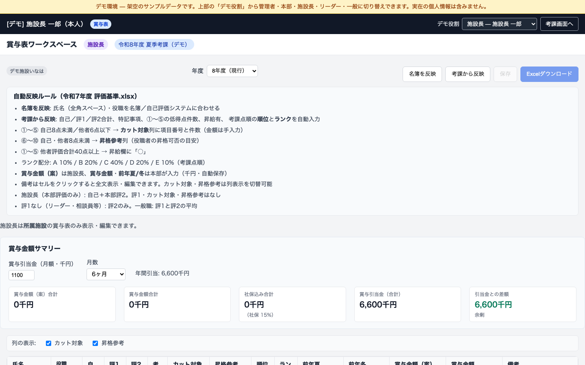
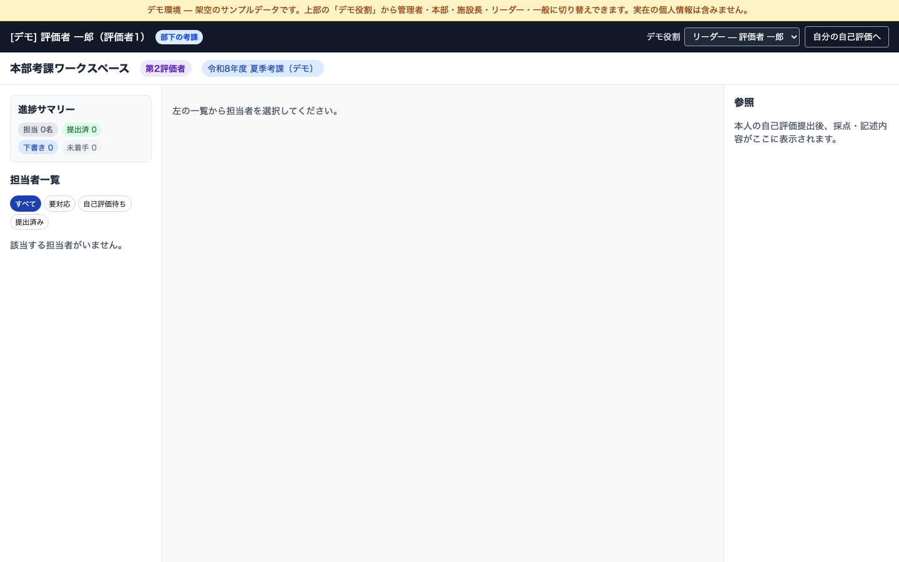

safir_hyouka / 課題提出用図解
サフィール人事考課
・賞与表システム
介護施設の考課と賞与を、ロールごとに分けて Web 上で扱えるツール。 ログイン不要の公開デモで、5つの役割を切り替えて体験できます。
人事考課（自己評価 → リーダー考課 → 本部考課）と
賞与表（施設長の案 → 本部の確定 → 引当金チェック）をひとつに。
現場の Excel 文化を残しつつ、Web ならではの権限分けとリアルタイム集計を実現しました。
01
システム構成
React UI
TypeScript · Vercel
— REST API —
FastAPI
Python · Railway
— データ —
PostgreSQL名簿・考課
+
JSON賞与・引当金
+
設定 JSON8施設マスタ
02
ロールとデータの流れ
GENERAL
一般職員
自己評価の入力・提出
LEADER
リーダー
部下の一次考課（評価者1）
DIRECTOR
施設長
賞与案・引当金・考課反映
HQ
本部
二次考課・確定賞与
ADMIN
管理者
期間・名簿・ユーザー管理
名簿→
自己評価→
評価者考課→
本部考課→
賞与表反映→
金額確定
考課 → PostgreSQL
賞与金額 → JSON（年度別）
施設設定 → facilities.json
03
画面キャプチャ

賞与表 — 管理者・本部視点
全施設一覧 / 引当金サマリー / 確定賞与

賞与表 — 施設長
賞与案・引当金（自動保存）

本部考課二次評価

リーダー考課一次評価

自己評価10項目＋所感

管理画面
考課期間・名簿取込・進捗管理
04
保持できるデータ
📋 名簿
社員ID・氏名・所属・職種・役職・勤続年数・評価者
例：山田 太郎 / デモ施設いなは
📝 考課
自己評価・評価者1/2の採点と所感、提出状態
例：10項目採点 + 哲学・スローガン
💰 賞与表
順位・ランク・前年夏/冬・案/確定・引当金
例：順位3 / ランクB / 480千円
📅 期間
考課期間名・年度・締切・テンプレート
例：令和8年度 夏季考課
👤 ユーザー
ログインID・ロール・管理者/本部フラグ
例：施設長 / 本部 / 管理者
🔍 監査
差戻し・退職処理などの操作ログ
例：誰が・いつ・何を
📦 退職アーカイブ
退職時の考課スナップショット
JSON + Excel
05
保存先と、選んだ理由
PostgreSQL
名簿・考課の正データ
employees / evaluations / users …
複数画面・複数ユーザーで共有。評価者↔部下の関係や提出状態を安全に管理するため、RDB を中核にした。
JSON
賞与専用データ（年度別）
backend/data/bonus_amounts/{施設}.json
考課とはライフサイクルが異なる（案→確定→引当金）。年度キー付き JSON なら履歴参照が容易で、Excel テンプレートとも共存できる。
設定
施設マスタ
facilities.json（デモは facilities.demo.json）
8施設の名称・シート名・引当金初期値をコード変更なしで差し替え。公開時は架空施設名に切替。
Excel
既存テンプレート（任意）
BONUS_WORKBOOK_TEMPLATE_PATH
現場の Excel 運用との互換・ダウンロード用。デモでは未設定でも名簿ベースで Web 表示可能。
Browser
UI 設定・セッション
localStorage
列表示設定や JWT はクライアント側で保持。サーバー負荷を増やさずシンプルに。
06
工夫した点 / 苦戦した点
✨ 工夫したポイント
- ロール別 UI — 施設長は「案・引当金」、本部は「確定」と編集範囲を明示
- 自動保存 — 金額入力を 700ms デバウンスで保存、消失を防止
- 引当金サマリー — 社保込み合計と引当金の差額をリアルタイム表示
- 年度別管理 — 過去は閲覧のみ、現行年度だけ編集可能
- Excel なし対応 — 名簿から行を自動生成、全施設で開始可能
- 公開デモ — 架空データ・5役割切替・CORS 対応で URL 提出
🌀 苦戦したポイント
- Excel と Web の二重管理 — 施設ごとに Excel 有無が異なり条件分岐が増加
- 権限の細分化 — 項目×ロール×年度（案/確定/閲覧のみ）の整理
- 単位統一 — 円と千円の混在を読込時マイグレーションで解決
- UI スクロール — flex 内の表で全体スクロール不能 → CSS で領域分離
- クラウド公開 — CORS・seed・Excel 未設定時の本番差分対応
- JSON 移行 — フラット構造から years 構造へ自動移行
07
技術スタック
FrontendReact · TS · Vite
BackendFastAPI · SQLAlchemy
DeployVercel · Railway
DataPostgreSQL · JSON